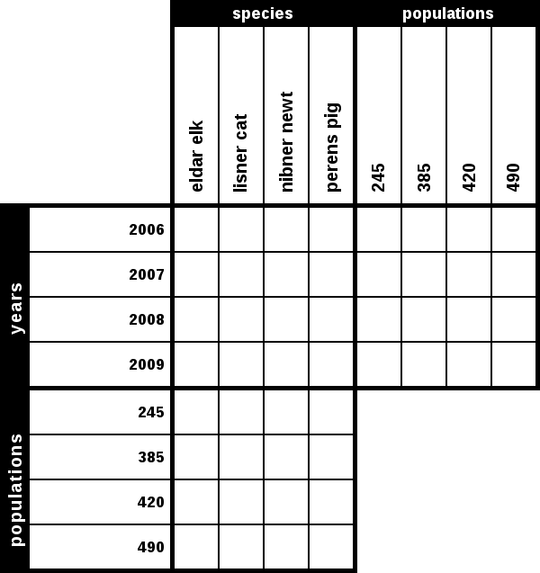

Logic Problem
For each species, find current estimated population and year recognized as endangered.

- The perens pig was listed 1 year before the animal with a population size of 490.
- Of the animal added to the list in 2008 and the eldar elk, one has 385 surviving individuals and the other has 245 surviving individuals.
- The species added to the list in 2007 is either the nibner newt or the animal with a population size of 490.
- The animal with a population size of 490 was listed 2 years before the species with a population size of 385.